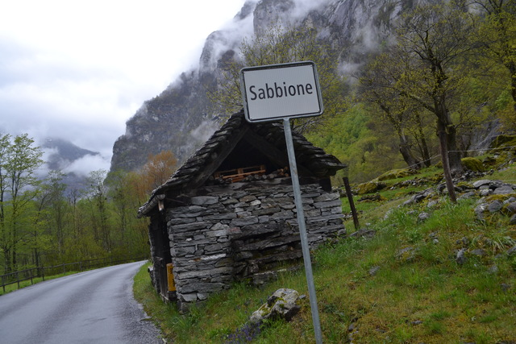
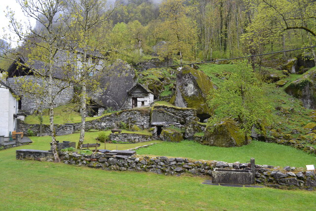

Verzasca渓谷の最奥部にある村。雨に濡れた石造りの家々が美しい。
ヴェルザスカ渓谷にかかる眼鏡橋。歴史は古く古代ローマ時代の17世紀に建設されたもの。
遺跡ではなく石造りの家々に現在も人々が暮らしています。山から転がり落ちてきた巨大な岩の下の空間に家をはめこんでいる。見渡す限り現代的なものが何も見えない風景。妖精が出てきそうな世界。この地方は建材にできる樹木が少なく、一方で岩山に囲まれて石はいくらでも存在したので石造りの建築が発展したらしい。屋根瓦の代わりに石板が敷き詰められ苔むしている。
この集落群は日本語の情報がまったく出てこないうえ、たどり着くのが大変でロカルノから路線バスに1時間乗ってMaggia川の奥にあるCavergnoという集落まで進み、そこから徒歩で渓谷沿いの山道を往復13km歩きます。そこまでして訪れるだけの美しさがあります。Cavergnoから順に、Mondada、Fontana、Sabbione、Ritorto、ForoglioとBavona渓谷沿いに集落が続きます。
絹のような雨が石を濡らし遺跡のように静まり返った風景のなか、玄関に飾られたリースと手入れされた植物、家の煙突から立ち上る煙が、ここが確かに人々の生活が息づく場所だということを知らせている。

Bavona渓谷の最奥部にある村。背後に滝を称えます。

言語も文化圏もイタリア。
ルガーノ湖畔の都市。文化圏も言語圏もイタリア。長崎や尾道もそうですが、海や湖の湖畔に斜面に沿って坂道が縫うように広がる街並みは味がある。
ルガーノ湖畔の小さな街。2016年に「スイスで一番美しい村」に選ばれている。ここはイタリア語圏で岸壁にへばりつくよう形成された街並みは地中海っぽくもある。ノスタルジックな裏路地の素晴らしさはこれまで訪れた街の中でトップレベル。
快晴のスイスアルプスは美しい、これに尽きる。4000m級の山々、氷河、山上湖の景観が車窓に広がるスイスアルプスの絶景路線。ルツェルンを朝4時50分に出発してベルニナ線でイタリアのティラーノまで往復して帰ってきたのが21時だった。15時間電車に乗ってた 笑
ベルニナ線の最高地点はOspizio Bernina駅で、標高2200m、この日の気温はマイナス3度。ここからイタリア側の終着駅のティラーノまで一気に下っていきます。

Alp Grum駅から望むパリュ氷河。